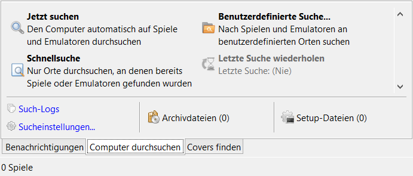

<h1 style="color: #2F4F4F;">Erweiterte Einstellungen</h1>
<p>Wie man den Computer nach Spielen und Emulatoren durchsucht:</p>
<ul>
<li>Im Informationsbereich den Tab <strong>"Computer durchsuchen"</strong> anklicken.</li>
<li>Gewünschte Aktion ausführen.</li>
</ul>
</img>
